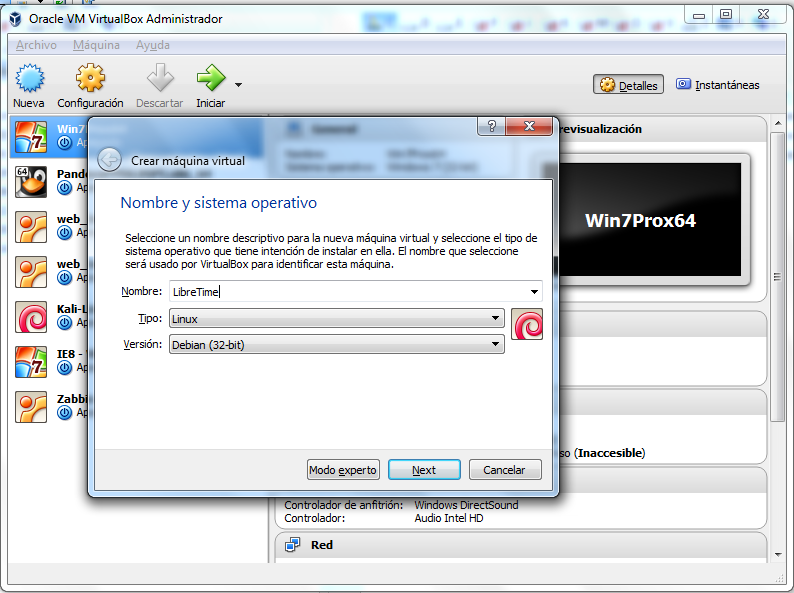
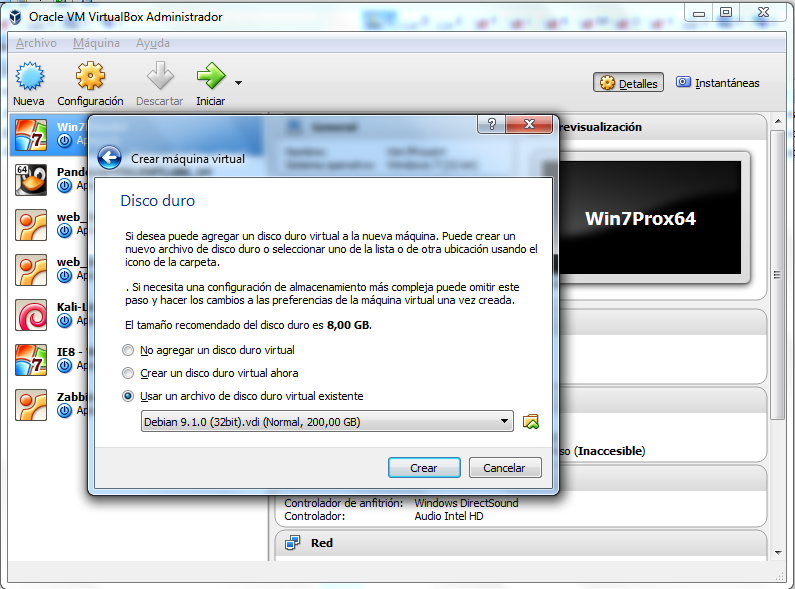
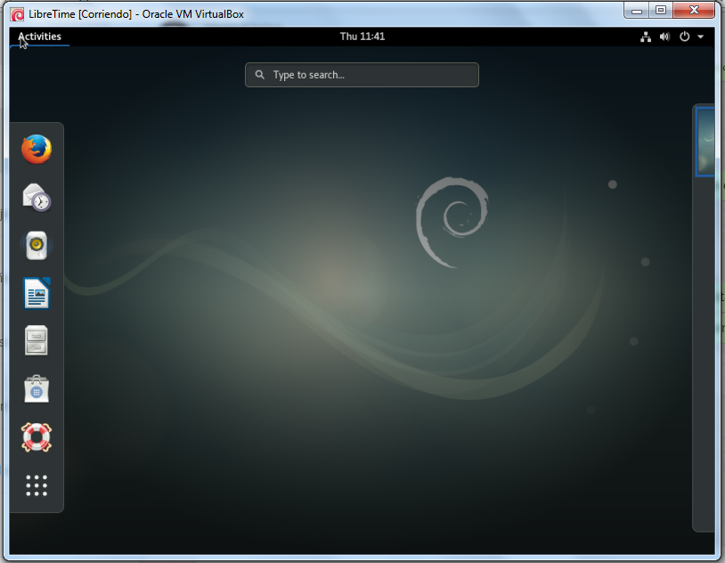
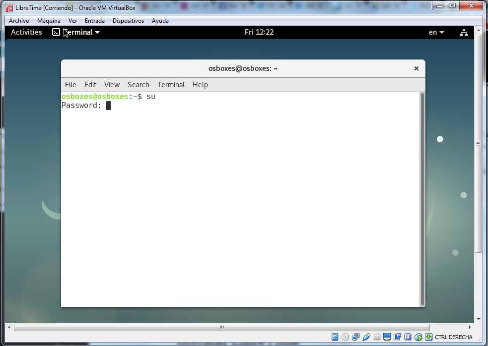
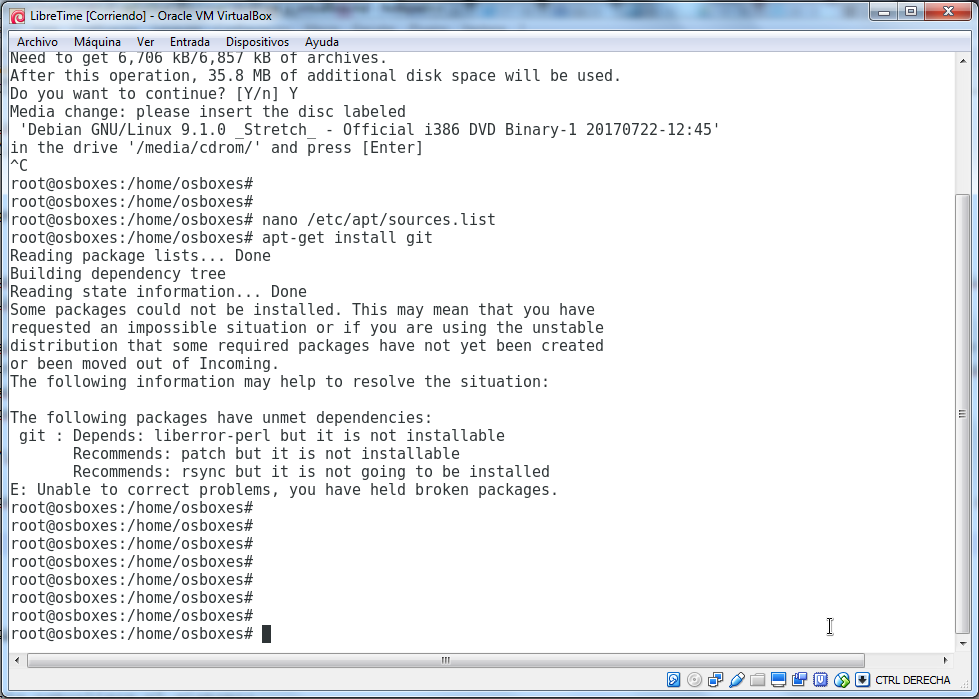
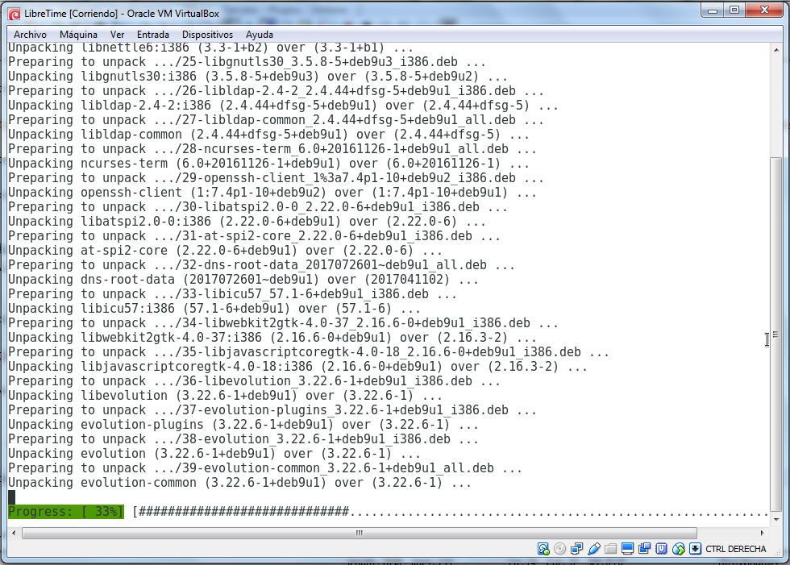
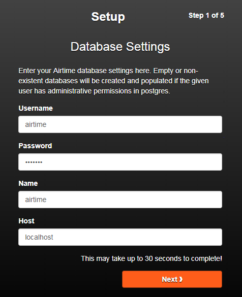
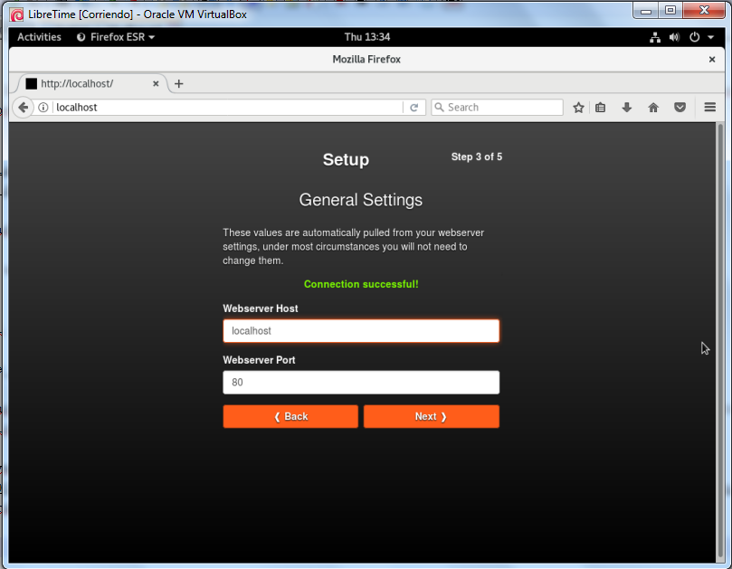
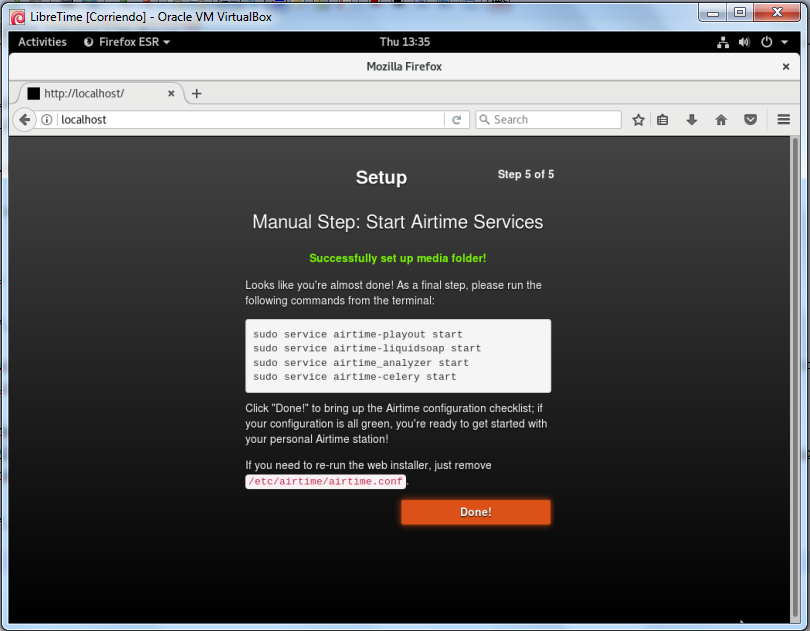
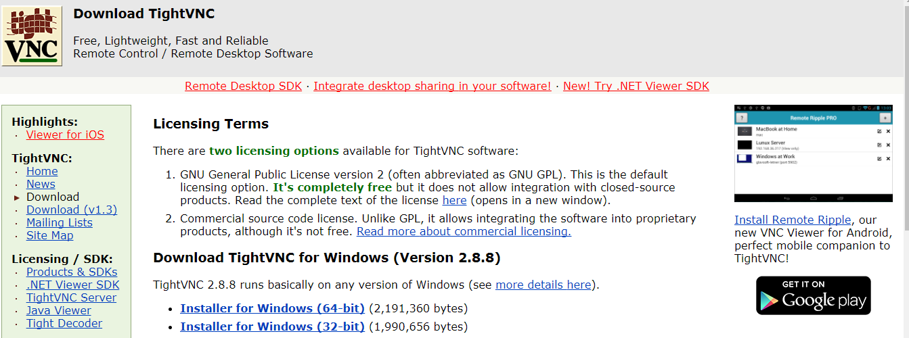

Este manual tiene como propósito dar algunas indicaciones generales para montar un entorno virtualizado en Debian con una instalación básica de Airtime para realizar pruebas. La maquina usada como anfitrión es MS Windows 7 pero en teoría usando VirtualBox se puede hacer sobre cualquier otro sistema operativo.
Para poder seguir el manual se requiere algún nivel técnico ya que en muchos casos no entra al detalle de temas como Debian o Linux (o asistir al taller presencial).
CREANDO LA MÁQUINA VIRTUAL
Virtualización técnica mediante la cual, utilizando un software determinado (QEMU, VirtualBox, Hyper-V, VMWare...), podemos crear un hardware "virtual", que a grandes rasgos funciona como un ordenador independiente, en el que instalar otro sistema operativo en él, por encima de nuestro sistema principal, y utilizarlo como si se tratase de un sistema operativo independiente y con la seguridad de que nada de lo que hagamos perjudicará al sistema real.

Para crear la máquina virtual en un equipo con Windows 7 usaremos la aplicación VirtualBox, así que lo primero es bajar la aplicación e instalarla (yo tengo instalada la Versión 5.1.10 r112026 (Qt5.6.2)). Si usas un sistema operativo Linux,OS X o Windows no deberías tener problemas para instalar VirtualBox por primera vez, VirtualBox es multiplataforma y funciona muy bien, salvo los primeros pasos el resto será parecido en cualquier otro sistema operativo.
Descarga VirtualBox-5.2.4-119785-Win.exe para MS Windows (Google Drive).
Despues para ahorrar tiempo bajaremos una imagen de Ubuntu o Debian reparada para VirtualBox. En estos enlaces se pueden descargar diferentes versiones: OSBoxes.org, VirtualBoxes.org.
Esta distribución de Ubuntu por ejemplo es una de las que recomiendan en el propio manual de LibreTime Ubuntu_16.04.3-VB-32bit.7z (1.0G) (Username: osboxes, password: osboxes.org).
Yo voy a probar con Debian 9.1 Stretch descargado de OSBoxes.org como "Debian_9.1.0-VB-32bit.7z" comprimido con 7-Zip. Usuario: osboxes, clave: osboxes.org, Root Account Password: osboxes.org.
Los archivos con extensón VDI como "Debian 9.1.0 (32bit).vdi" o otros que queramos importar en Virtual Box es una imagen de un disco duro, por eso antes de empezar hay que crear una nueva maquina virtual. En el menú principal de Virtual Box seleccionamos Máquina > Nueva.

En la siguiente pantalla asignamos la memoria RAM que se dedicará a la máquina virtual (mínimo 1GB recomendable).
En el momento de seleccionar el disco duro debemos agregar uno existente (el archivo "Debian 9.1.0 (32bit).vdi" descargado y descomprimido previamente).

Ya estamos preparados para arrancar nuestra máquina virtual con Debian.

PASOS PREVIOS EN DEBIAN
He abierto un terminal de comandos y me he logeado como administrador con su (solicita contraseña "osboxes.org")

Ahora instalo el cliente Git para clonar el repositorio LibreTime de GitHub:
# apt-get install git
Tengo un problema, el sistema me solicita que inserte el DVD de Debian para buscar los paquetes necesarios, cancelo la operación.
Edito el fichero que contiene los repositorios donde Debian busca para instalar las aplicaciones # nano /etc/apt/sources.list. La línea donde hace referencia al cdrom debemos comentarla escribiendo un '#' por delante (para familiarizarse con el editor de textos Nano dejo algunos enlaces en Enlaces externos).

Volvemos a tratar de instalar Git (# apt-get install git) pero en esta ocasión se produce un error de dependencias.

Voy a añadir dos nuevas líneas a # nano /etc/apt/sources.list:
deb http://deb.debian.org/debian stretch main
deb-src http://deb.debian.org/debian stretch main

Y después he ejecutado en la línea de comandos:
# apt update && apt upgrade
Para actualizar con la información de los nuevos repositorios y para actualizar las versiones de los paquetes que tenemos instalados en Debian.

Ahora ya puedo instalar Git:
# apt-get install git
INSTALAR LIBRETIME
Ahora voy a clonar el repositorio LibreTime en GitHub.
# git clone https://github.com/libretime/libretime.git
Cuando se descargue LibreTime accedo a la carpeta y ejecuto el script # ./install.

Durante la instalación configura:
- Apache
- IceCast
- PHP
- PostreSQL
- RabbitMQ.
- Liquidsoap: Utilidades streaming.
y el resto de paquetes necesarios.
Por el momento una vez finalizada la instalación sólo puedo a Icecast en http://localhost:8000 y a página de instalación de LibreTime en http://localhost, he dejado todos los parámetros como estaban (con "airtime") y he seleccionado continuar.
Paso 1 de 5: Instalación de la base de datos. Username, clave y nombre 'airtime' y la máquina o host local 'localhost'.

Paso 2 de 5: Configuración del broker de mensajería RabbitMQ. Dejamos como está también como en el paso 1.

Paso 3 de 5: Configuración general.

Paso 4 de 5: Configuración de ruta alojamiento multimedia, dejamos como está (debería crear la ruta /srv/airtime/stor/ automáticamente).

Paso 5 de 5. Servicios (demonios en Linux).

Para volver a iniciar el instalador Web sólo debemos borrar el fichero /etc/airtime/airtime.conf.
Cuando acaba la instalación muestra un resumen.

Advertencia errores:
- Airtime Analyzer no está arrancado como servicio, seguimos instrucciones ejecutando
service airtime_analyzer start(luego comprobamos que está arrancado constatus. - Pypo (Airtime playout service): Reiniciamos demonio
service airtime-playout restart. - Liquidsoap (Airtime liquidsoap service):
service airtime-liquidsoap restart.
Después de estos pequeños ajustes si refrescamos la página con el resumen de la instalación ya está todo correcto.
Ahora ya se puede acceder al interface de administración Web http://localhost.

Ahora ya puedo acceder desde mi maquina anfitrión a LibreTime en http://192.168.221.103/ (usuario: admin, clave: admin).

ADMINISTRACIÓN BÁSICA DE LAS APLICACIONES
Debian
Para averiguar los puertos que tenemos abiertos usamos el comando ss:
# ss -lntu
Mensajes de log del sistema en /var/log/messages.
Servicios o demonios:
Servidor Apache
El fichero /etc/apache2/sites-available/airtime.conf contiene la configuración de la Web en PHP de Libretime.
Reiniciar el servicio Apache (o start|stop|status.. en vez de reload) :
# /etc/init.d/apache2 reload
Si se produce un error del comando RewriteEngine de Apache probablemente no este el módulo rewrite activado, usamos:
# a2enmod rewrite
Y volvemos a probar a arrancar el servicio de Apache.
Podemos encontrar los logs en /var/log/apache2.
Web en PHP
Los ficheros de la Web de administración de Airtime se encuentran normalmente en /usr/share/airtime/php/.
Los logs podemos encontrarlos en /var/log/airtime/zendphp.log
Los archivos importados en /srv/airtime/stor/import/.
Airtime Analyzer
Logs en /var/log/airtime/airtime_analyzer.log
ADMINISTRACIÓN REMOTA DEL SERVIDOR
VNC
Para poder administrar remotamente el servidor Debian con LibreTime desde cualquier sitio y tener acceso completo a la máquina en modo gráfico lo mejor es instalar un servidor VNC
# apt install tightvncserver
Arrancamos la sesión en el servidor
# tightvncserver
Para conectarnos remotamente con un cliente VNC TightVNC o UltraVNC son buenas opciónes para MS Win.

Si queremos saber que IP tiene nuestra máquina virtual (especialmente si estamos en casa y nuestro router asigna IPs dinámicas usando DHCP) escribimos # ip addr show.
Otros comandos del servidor VNC:
service vncserver status
SSH - Secure Shell
# apt-get install openssh-server
Ver más en es/SSH - Debian Wiki. Como cliente si usamos MS Win podemos usar Putty (usuario: osboxes, clave: osboxes.org).
RECURSOS Y AYUDA
El repositorio GitHub de LibreTime puede ser un sitio excelente para comenzar sobre todo si tenemos problemas con la instalación. Podemos crear un tema en la pestaña "Issues".
También es recomendable siempre revisar la ]documentación oficial](http://libretime.org/).
Enlaces externos
- Web principal con documentación http://libretime.org/.
- Repositorio en GitHub.
VNC Server:
Editor Nano: